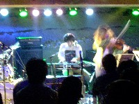
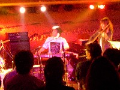

|
● live reports 1995- ●
|
 |
| |
#見ての通りす、昔のコンテンツから清水一登関連のみ抜粋。
少ないなぁ・・・
|
|
 |
|
 |
#渋谷のON AIRのエレベータを上って行くと、そこはNESTでした。
まぁその
Abu Dhabi ver.00と名づけられたツチノコ（舞首さま）仕切りのイベントの第0回目です。
最初にヒデノブイトウさん、机の上には色々な音源モジュールが並んでます。
CD聴いた感じでは、とてもポップな感じでしたけどライヴではストイック・・というか実験的な音響。キーボードでフレーズ弾く辺りとかは何かカンタベリーを感じるような音で気持ちよかったですけど。
で、オパビニア。今回のセットでは清水さんは珍しくピアノの上にキーボード2段重ねに音源モジュールを乗っけてました。
昨日のトリオでも使ってたよーなエレクトロな変な音を重ねながらの演奏。
色んな音源持ってきたのは良いのですが、Johnson Blues終わったところで「全然うまく使えなーい」とか・・・（まぁいつもの事なよーな気も）
そして最低人では曲のブレークの所でトラブル発生、「しばらくご歓談下さい・・・」って曲のど真ん中なんすけど。
まぁ相変わらず「スゴイ演奏+スゴイ間抜けな感じ」という他に類を見ないコントラストでした。今回は曲崩して演奏する割合が多かったよーに思います。ヒョーロク玉の後とかしばらく完全にインプロやってました、オパビニアでのインプロって初めてなよーな気もしますが鬼怒無月さんのギターとかちょっとトランスみたいな感じで良かったです。
セットリストはこんな感じ・・・だと思う。店の時間の都合で残念ながらアンコールは無し。
- 情熱の通り雨
- johnson blues
- 最低人
- ふぐ汁
- ヒョーロク玉
- インプロ
- コンプトリ
- タスマニア
- 清水一登 (keyboards,piano)
- 鬼怒無月 (guitars)
- 芳垣安洋 (drums,percussions)
#えーと今回もやっぱりインプロだったんですけど、何やら清水さんは音源モジュール(?)を駆使して、変な音を一杯乗っけてました。
今まで清水さん絡みで見たインプロものの中で一番面白かったです、1st setとか「1時間の曲です」とか言われても納得しそーな感じ。演奏してる所だけ見てると、コミュニケーション出来きてるのか心配になるよーな感じですけど、出てくる音は有機的に繋がってるよな感じ。
ちなみに終演後は清水さんと鬼怒さんで、「明日のリハ」て言ってほんとにオパビニアの曲を練習してました。ちょっとお得な感じ（帰る時間が遅くなったけど）
- 清水一登 (piano,bass clarinet,口琴,sampler(?))
- 鬼怒無月 (guitars)
- 太田恵資 (violin)
#えーと何のイベントだか未だにわかってないんだけど、清水一登さんがソロで何かやるらしーとか言う話で行ってみました。
午前1時くらいにロフトプラスワンへ行ったらDJタイム中でした、何故かこの日はタダカレーが食べられたので、カレー食べたり酒飲んだり。
んで、清水さんのソロは「Minerals」のイントロからチルアウトな感じに行くのかな〜？とか思ってたら、だんだん奇怪な音が沢山になってって・・・上手く行ってるのか上手く行ってないのか（行ってなかったそーです）とにかく訳のわかんない世界へ。
中盤ではラジカセから音拾ってたマイクを取って歌いだしちゃいました、しかもこの時のキーボードの音が（どんなセッティングになってるのか分かんないけど）歪みまくってて、すげー面白い！
なんかもー最後の方はフツーな音は一つもなかったよーな感じで、近くに立ってた外人とか「クレイジー」とか言ってました。激しく同感です。
いやでも、こんな壊れた清水一登さんは久々に見たような、ほんとサイコーでした。またあんなのやってくんないかな？
ちなみにKILLING TIMEの
Ma*Toさんが来てました、なんでも前日に「ヘビ笛」を借りようと清水さんに電話をしたとか。世の中って面白いなぁ。
#えーとin Fでのこのメンバーは、
ちょうど3年前くらい振りかな？
最初は清水さんのピアノソロ、即興って感じではなくて過去の曲を色々混ぜながらの演奏。BLIVITSとかEBIROとか最低人とかが聴こえてきたよーな感じで、あと前やった「タンゴもどき」もやってたみたい（気付かなかったが）
ピアノソロは40分位だったかな？休憩を挟まずに、向島さんと今堀さんを交えての演奏。
こー3年前のようなモノを想像してたんですけど・・・全部即興でした。まぁそのあんまりこんなメンバーでの即興は見ることが出来ないんじゃないかなと言うような感じで、かなり独特な雰囲気でした。
緊張感/テンションみたいな感じでは無くて、音を小出しにしてって取っ掛かりを探ってくよーな感じの。時折室内楽っていうか、チェンバーみたいな表情を見せてて面白かったです。こーゆーのは生で見れるのが面白い。
アンコールとして「Johnson Blues」を演奏。ですが全くのリハ無しで、譜面が向島さんが持ってた1枚しか無かった模様で、今堀さんは必死に譜面を見つめながらの演奏。それでもかなりヨレヨレな感じでは有ったけど。
終演後、少しお話聴いたけど、全部インプロで行くのが決まったのは当日だったよーで。まぁ、面白かったからいいけど、そのぉ、曲も聴きたかったかな・・・なんて。
- 清水一登 (piano,bass clarinet)
- 向島ゆり子 (violin)
- 今堀恒雄 (guitars)
#待望の
アルバム発売ライヴです。吉祥寺MANDALA-2へ・・・・って、
すっげー混んでる。前回の
桜木町でのライヴの3倍以上入ってる。素晴らしいー、でも狭いー。
客席にはいつも良く見る方たちの中に、ほとらぴからっの佳村萌さんや、横澤龍太郎さんなんかも来ていました。
そんなわけで、待望のレコ発ライヴです。「今日はレコ発ライヴと言うことで、アルバムに入っている曲全部やります」と。
アルバム中一番ストレートな曲「コンブトリ」からスタート、さすがにレコーディング後なので安定した演奏になってます。かっちょいい。
流石にバンマスなだけあって、珍しく清水一登さんが沢山喋ってましたが、なんというかほとんど前後不覚な感じで可笑しかったです。（というかコンブ取りのテーマソングって何だ？）
前半のセットはこんな感じ、3曲目のインプロはアルバムの「Crunchy brains」に相当する曲だそーで、当然全く違うインプロでした。

- コンブトリ
- ふぐ汁
- インプロ (Crunchy brains)
- (Slight) Googli-Moogli
- 最低人
#休憩を挟んで、2nd set。「Pre-cambria dreamin'」以降は向島ゆり子さんを加えての演奏です。
前回は演奏しなかった、「BLIVITS」も演奏してました・・・嬉しいんですけど、最近この曲崩しすぎなよーな気も。
あと、「ヒョーロク玉」はオパビニアで演奏されるのは初めてのような気が（清水+鬼怒+向島とかでは演奏してた）。鬼怒無月さんのギターのトーンが気持ちよい、構築系のゆったりとした曲。
「BLIVITS」を演奏するのは、久々じゃないかな？ここでは清水一登さんはバスクラを演奏してました、中間部はほぼ別の曲と化してますが。
アンコールで「何やりましょうか〜」とか言ってる時に何故か鬼怒無月さんがKing CrimsonのFractureとか弾いてました。いやーそのこのメンツで完コピしても面白そーだなぁなんて事を不謹慎にも思ったんですけど、結局アンコールには「Pre-cambria dreamin'」をもう一度演奏していました。

- 情熱の通り雨
- Johnson Blues
- Pre-cambria dreamin'
- ヒョーロク玉
- BLIVITS
- Minerals〜Tasmania
- Pre-cambria dreamin' (アンコール)
そんなわけで、次回は7/3の渋谷7th floorだそうです。行くべし。
- 清水一登 (keyboards,piano,bass clarinet)
- 鬼怒無月 (guitars)
- 芳垣安洋 (drums,percussions)
- 向島ゆり子 (violin)
#んで、清水一登/佐藤正治加入のヒカシュー初ライヴです。自分的にはヒカシューを見るのはDRIVE TO 2000のイベント以来です。
曲名はかなり適当（ヒカシューのCD全部は持ってないの）最初はちょっと控えめなよーな気もしましたけど、後半から気合が入ってきた感じで良かったです。「ビロビロ」のサビ(?)に突入する所なんか、カタルシスって感じでした。
新規加入のお二人は初ライヴとは思えないほど溶け込んでました。自分は清水一登ファンなのでどーしても贔屓な感想になりますが、今までのヒカシューに有ったちょっと平面的な感じが、清水さんのキーボードが入る事で立体的な感じになって、妙な曲がさらに引き立つような気がしました。ちなみに佐藤さんのパーカッションも良いアクセントでした。
このメンバーで演奏される、清水さんの曲ってのも聴いてみたいな。ちなみに次回は7/11(tue)、やっぱり吉祥寺STAR PINE'S CAFEにて。
- 丁重なおもてなし
- ?
- マスク
- デジタルなフランケン
- ?(なんか朗読とインプロみたいなの)
- ?(ハイハイハイ〜)
- ?(入念)
- 恋とガスパチョ
- さなぎ
- ?(インプロ?)
- ?(ラヴ・チケット)
- ビロビロ
- ?
- うわさの人類
- プヨプヨ (アンコール)
- (インプロ)
- 巻上公一 (vocals,trumpet,thermin)
- 三田超人 (guitars)
- 坂出雅海 (bass)
- 新井田耕造 (drums)
- 清水一登 (piano,keyboards,bass clarinet)
- 佐藤正治 (percussions,voice)
#えーと開始直前にin Fに着いたら、例によって例の人の姿が見当たりません・・・「とりあえず始めようか」みたいな話になったタイミングで、太田資恵さん登場。（なんか俺が見るとき、いっつもこんなタイミングですが）
内容は、ほぼインプロ合戦。なんだかいつにも増していーかげんなよーな感じの（いやけなしてる訳ではなくて・・）
ピアノの中に色んなモノを入れてプリペアドっぽい事してたら、何かが取れなくなっちゃったりとか。トホホ感が普段の二割増くらいかな。ライヴ中にテレビを付けてるのは生まれて初めてみました。
ちょこちょこ新大久保ジェントルメンな曲とかもやってたりしてました。「Belfast」（この曲好き）とかも。
でも、もうちょい新大久保ジェントルメンとは違ったよーなのも聴きたかったかなぁ。
- 清水一登 (keyboards,bass clarinet,voice)
- 梅津和時 (sax,clarinet,voice)
- 太田資恵 (violin,voice)
#えーと、去年はSamla Mammas Mannaで、一昨年は
Lars Hollmer's SOLAで、3年前の
日本座村と、もはや毎年恒例になりつつ有りますが、Lars Hollmerの来日。
諸般の事情で7:30位に会場に行ったら、やっぱりはじまってました。set listはちょっとわからない（スウェーデン語の曲名がどーしても覚えられない）のですが、
アルバムからの曲中心のセットでした。
前回2回と違うなーと思ったのは、よーやくバンドの音になったなぁーという所。「曲を忠実に再現する」って所から、更にその曲の中でちょっと崩してみたり、遊んでみたりするよーな余裕が出てきたんだと思います。スウェーデンでのツアーの成果かしら。
お約束の坂本弘道さんの、火花チェロも炸裂してました。逃げる向島さん、逃げられない吉田さんとLarsの姿が可笑しかった。
清水一登さんはやっぱり曲の骨格を支えるような感じで、ベース音を主に担当してました。担当してましたけど、今回は結構あちこちで遊びを入れてるよーな感じで、清水一登ファンとしても満足。
やっぱり行けて良かったです。（翌日弟に借金したが）
- Lars Hollmer (keyboard,accordion)
- 向島ゆり子 (violin,toy piano)
- 吉田達也 (drums)
- 清水一登 (keyboards)
- 大熊ワタル (clarinet)
- 伏見蛍 (guitars)
- 坂本弘道 (cello)
#いやぁもう、なんつうか。ほんとにロンリーな感じ。
新大久保ジェントルメンのライヴです。はじめて見るんですけど。
物凄く久々のライヴなハズなんですが、なんか3人しかいません。抜けた穴を埋めるつもりか、3名の足元にはパーカッション類が転がってました。
一曲目「AYAM」では
フツーにドラムとベースとパーカッションを抜いたバージョンって感じで・・・ああぁぁぁ。まぁその後は即興とか「オタのトルコ」とか「イゴールの嘆き」とか新曲(?)とか色々。とりあえず皆様自分のメイン楽器以外にパーカッションをボコスカ叩いてました。梅津・・・じゃないやグレートの足元からゴミ箱叩いてるような、ボコッとした音が聴こえるなと思っていたら、それはゴミ箱であることに、ライヴの後半にグレートがゴミ箱被った所で気付きました。
結構な頻度で清水・・・もとい、イゴールが「あぁぁ」とかため息を漏らしてました、アブドゥール曰く「コノバンドノ・メンバーガヌケテイクリユウガ・ヨクワカル」だそうで。
えぇぇと、とにかくゆる〜い感じで、半ばコミックバンドと化してました。まぁ別につまんなくはなかったんだけど、「Belfast」のイントロとか外しちゃならんだろー？なんて。
- グレート金時 (sax,clarinet,percussions,vocals)
- イゴール (keyboards,piano,percussions,vocals)
- アブドゥール・ワハハ (violin,percusions,vocals)
#芳垣安洋さんとマルコシアスバンプの佐藤研二（ぐわー懐かしい、イカ天見てたよ）のデュオ。
ゲストが豪華です・・・というか清水一登目当てです、芳垣ファンの方すみません。
2バスのドラムセットとマーシャル2段重ねのベースで非常に耳が痛い感じでした、目の前に芳垣さんのチャイナシンバル有ったし。間近すぎて怖。
基本線は叩きまくりの芳垣さんに、佐藤さんがベースをガリガリ弾きまくると言う感じでした。佐藤さんって相変わらず左手に白い手袋してベース弾いてるのね。ラウドな即興。
ヤドランカさんが入った全員の演奏では結構バランスの取れた感じで、この面子だとやっぱり面白いです。ヤドランカさんは初めて見たんですけど・・・天然かな？笑いました。
んで、お目当ての清水一登さんのはなんかの曲を清水さんが訥々と歌い上げた後、怒涛のプログレ（にしか聴こえなかった）なんでもTonny Williams Life Timeの曲だとか。後で探してみよう。
- (芳垣+佐藤)
- (芳垣+佐藤)
- (芳垣+佐藤)
- (芳垣+佐藤+勝井)
- (芳垣+佐藤+高良)
- Time After Time (全員)
- Doors/Light My Fire (全員)
- (芳垣+佐藤)
- (芳垣+佐藤)
- (Tonny Williams Life Timeの曲) (芳垣+佐藤+清水)
- HAIKU (全員)
- ? (全員)
- Cream/White Room (全員)
- ? (全員)
- 芳垣安洋 (drums)
- 佐藤研二 (bass)
- 勝井祐二 (violin)
- 高良久美子 (vibraphone,percussions)
- 清水一登 (piano,keyboards)
- ヤドランカ (sazoo,guitars,vocals)
#なんだか面白そうな面子だったので桜木町まで、やっぱり全部即興でしたけど。
巻上公一さんは物凄く久々に見たんですけど、見てるこっちの頭がおかしくなるよーなボイスパフォーマンス。ホーミーも気持ちよかったです。
佐藤正治さん(Adi,美狂乱,massa's jammer)は、実はこの日初めて見ました。ジャンベとwave drum使ってましたけど、ボイスパフォーマンスで巻上さんに対抗してる場面も多かったです。でもリズム出してる時のほうがはるかに面白いです、ていうかあんまり歌ってくれるな。そんなに複雑なことしてないんですけど、この人のビートはとても好きかも。一回ドラムセットで見てみたいなと思いました。
清水一登さんは相変わらず、この人の完全即興って結構珍しいと思うんですけど、ピアノの中にシンバルとかバネとか置いてプリペアドピアノみたいな事したり、風船こすったり、バスクラリネットでブピーとかやってました。
休憩挟んで2setの最初にやった巻上さんの口琴に合わせて突き進むよーなのがとてもかっちょ良かったです、というか清水さんのピアノが乗っかるとどーしてもプログレに聴こえちゃう。
なんつーか、変なオッサン達でした。
- 巻上公一 (voice,thermin,口琴,ホーミー)
- 清水一登 (piano,bass clarinet)
- 佐藤正治 (djembe,wave drum,voice)
#えと、この日はよみうりランドでHermeto Pascoalが来てて、とてもとても行きたかったんですけど。お金とヒマの問題で行けませんでした、それにどーしてもこっちが見たかったし。
- 清水一登 (piano,keyboards)
- 鬼怒無月 (guitars)
- 芳垣安洋 (drums)
#行ったらリハやってました、ふぐ汁とか、タスマニアとか、地底人とかの合わせやってました。今までのライヴよりもだいぶまとまってるみたい、期待。
あ、ちなみにはじまる前によみうりランド帰りの
Tさんが来ました。パスコアル終わってから桜木町へ来たようです、やっぱり面白かったらしいです、いいなぁ。
#1st setは全部ぶっ通しで45分くらい。1曲目はなんだか清水一登らしくないかっこいいリフの曲、新曲みたい。清水さんががっちり構築した曲をどんどん崩して演奏するよーな感じ。以前よりも攻撃的な感じです、よくよく考えてみるとものすごく王道プログレなバンドでも有ることに気付きます。
- ? (新曲)
- ? (なんだっけな？)
- ふぐ汁
#2nd setは何やらSOFT MACHINEのOUT-BLOODY-RAGEOUSソックリのシーケンスから「ミネラルズ」「タスマニア」を演奏、この曲の緊張感はすごかったです、一番熱入ってたんじゃないかな？
演奏終わって清水さんが
「指から血出ちゃいました〜」とか。指から血出して演奏する人を初めて見ました。かっちょいいぜ、イゴール。
久々のワンマンってこともあってか（まぁあんまりライヴやってないけど）この日はとても格好良かったです、"BLIVITS"とかやらなかったけど、もうKILLING TIMEでの曲は必要ないってことかな？バンドとして定着してきたよーな印象を受けました。
上にも書きましたけど構築/即興の交じり合ったよーな感じなんですよね、清水一登さんのトボケた感じのメロディーの合間を縫って、突然狂ったようなギターが入ってきたりする感じ。個人的にはもーちょい曲に忠実な感じでもいいような気もしますけど、ライヴではこれでいいのかも。
あ、あとCD出すかもとか。清水さんのソロアルバムが1990年だから12年振りくらいになるのかな？非常に期待値でかいです。
- ミネラルズ (前違う名前だったような・・・)
- タスマニア
- 情熱の通り雨
- Johnson Blues
- 19
- 地底人/最低人
- Johnson Blues (アンコール)
#Caravan/Camel/Hatfield and the NorthのRichard Sinclairの来日ライヴ。サポートの面子はトリオ・ロス・オバピノス
- Richard Sinclair (bass,guitars,vocals)
- 清水一登 (keyboards)
- 鬼怒無月 (guitars)
- 芳垣安洋 (drums)
1部はリチャードがギターを持って弾き語り....客のリクエストに応えていろんな曲をやってました。CaravanのLand of the Grey and PinkとかCamelのDown on the Farmとか歌ってました。
でもかなりテキトー、と言うか歌詞覚えてないよな。
トリオ・ロス・オパビノスが2曲だけ演奏して。（地底人/最低人ともう一曲なんか）2部。いきなりHatfieldのShare Itでした。リチャードはベースを弾いて.....って、リハしたか？みたいな危うい演奏。バックの3人も困るような感じ。
曲は他にWinter WineとかCamelの曲（カッコ良かったんだけど、曲名がわかんない）あとやっぱりHatfield and the Northで、Halfway Between Heaven and Earthとかやってました。
清水一登さんは、Hatfieldの曲とか嬉々として弾いてました。清水一登さんがカンタベリー好きなのって結構有名な話で、AREPOSのライヴで'Moon in June'なんてやってたし。ちょっと熱意が伝わってくるよーな感じもしました。
2回目のアンコールでリチャードが出てきて、Matching MoleのO Carolineをマイク無しで..ちょっとしみじみ...でもやっぱり後半はテキトーでしたけど。こんな曲まで聴けると思いませんでした。
会場出てみると3時間近く経ってました。演奏的には多々問題が有るようなライヴでしたけど、リチャードの人柄と声とで結局許されるようなそんなライヴだったかな？願わくばもし次の来日が有るなら演奏家としての面も見せてもらいたいですけど。
#なんかもーKILLING TIMEナイトって感じでした。
スゴイです、ヤバイです。EBRIOなんて演奏してるの見たら３年前の年末のKILLING TIMEを思い出しちゃいました。ちょっとなけてくるよーな。
なんていうか清水さんもKILLING TIMEの音楽が好きなんだなとか、そんな事を思いました。
前半は短めで地底人/最低人っぽいのをやりながら、清水さんがバスクラリネットに持ち替えてKILLING TIMEの曲。すっごい綺麗な曲で、CDだと
SKIPの１曲目の後半で少し聞こえるメロディーの曲。
2nd setの'44blues'はウソかも、他のタイトルだったかも。ちょっと君が代のフレーズを演奏した後にやったのは、
IRENEの中の オフちゃん のメロディーに聞こえたんだけど.....何だっけな？最後にEBIROなんてやってました、ほんとこんな曲やると思わなかったです。
ちなみに余談ですが、この日は渋谷のUPLINKでMa*Toさんと板倉文さんとWhachoさんが出てるパーティみたいなのが有ったんですよねー、ほんとに....一緒にやって欲しいなーなんて。ずーっと思ってるんですけど。
1st set:
-
- 地底人と最低人
- ? ("セトゥベ"って言ってたかな？SKIPの後半に途切れ途切れに聞こえる曲)
2nd set:
- impro.
- Johnson Blues
- 君が代
- ? (オフちゃん?)
- ? (インプロ?)
- EBRIO
- SALON (Upon Hearing)
- ? (1st setの最後の曲)
- 清水一登 (piano,bass clarinet)
- 斎藤ネコ (violin)
- 鬼怒無月 (guitars)
#ぴあ発のチケットが取れなかったので、当日売りのチケットで入りました。
前回はマンダラ2で満員だったんですけど、今回もほぼ満員。
- Lars Hollmer (accordion,keyboards,vocals)
- 大熊亘 (clarinet,sax)
- 向島ゆり子 (violin,toy piano)
- 吉田達也 (drums)
- 清水一登 (keyboards)
- 坂本弘道 (cello)
- 伏見蛍 (guitars,mandolin)
前回の曲 +αでした。(曲目ワカラズです、ごめんなさい。L.HollmerのCDって持ってなくて)
親しみやすいメロディーに変拍子の、相変わらず無茶な曲たちでした。
前回のポチャカイテマルコ+L.Hollmerの時にも出ていた伏見蛍さんがゲストで何曲かで参加してました。あのメンバーに囲まれてあの若さで、でも結構存在感があって。すごいなぁーとか。
今回思ったのは向島ゆり子さんのバイオリン。やっぱり力強くていいなぁーとか。
#"in F"で最近たまーに清水一登さん関係のライヴをやっていまして、(前回の清水+今堀は見れなかったんだけど)もう今回のメンバー見てずーっと待ってたライヴです、大泉学園遠くてちょっと嫌だったけど。
- 清水一登 (piano,bass clarinet)
- 向島ゆり子 (violin)
- 鬼怒無月 (guitars)
と言った感じ。もう「見に行く」以外の選択肢は無かったです、俺にとっては。
で、最初のは清水さんのピアノソロ。地底人最低人や海底のワルツとかover the rainbowとか(他にも知ってるのが混ざってた)のフレーズをいりまぜて、ちょっとトボけた感じのそれでも物凄く良く動く両手でちょっと圧倒されます、なんだか途中から譜面をピアノの中に入れてプリペアドピアノみたいにして弾いてたりしてました。
んでしばらく何か考えてるのか考えてるふりをしてるのか神妙な表情をした後に、とても落ち着いたバージョンのBLIVITS〜waltz#2でした。えーと30分くらいだったかな。
10分くらいの休憩を挟んで上のメンバーでの演奏。
- 44 blues
-
- waltz #10
- 19
- johnson blues
- 19 (encore)
店の人が照明消そうとしたら、「譜面見えなくなるんで...消さないで下さい」と鬼怒さん、なんだか大変そう。
えーとリズムボックス(かな？)をバックに44blues(って言ってたと思う)ブルースってのは必ず「朝起きると"my baby get away"」か「犬が死んでる」んだそーです。それはともかくとして、ちょっと哀愁漂う44才のブルースかな？ なんだか鬼怒無月さんが上手くはまっていて、今堀さんより組み合わせが良いような気がしました。
なかなかリズムボックスの音が上手く出なかったみたいでしたけど、次の曲が13拍子のなんだかちょっとプログレ入ったゆったりとした奇麗な曲、L.Hollmerのライヴでやっていた曲を思い出しちゃいました。鬼怒無月さんのギターがR.Frippっぽかったり。
waltz#10では「清水"ワルツ王"一登」になっちゃってました。この曲では清水さんb.clarinetでした。清水さんらしい3拍子なのになんだか変に可笑しい曲。
3曲目はなんだか妙な拍子の曲、なんだかリズムがひっくり返っちゃうような変な曲....アンコールの時に「19やろう」って言っていたので「19」って曲名なのかも知れなくて、何でこの変な曲が「19」なのかなーというのは帰りの電車で気づきました。19/8拍子の曲......なんだかこのリズムに合わせて鬼怒無月さんも向島ゆり子さんもソロ取ってました、すげー。
最後はjohnson blues、この曲は何回も演奏してるだけあって安心して聴けました。向島さんの音色が気持ち良くて良かったです。
アンコールでは「さっき上手く行かなかったので、悔しいから」と清水さんがさっきの「19」を短めに演奏。
新しい曲とか聴いたこと無い曲とか沢山有って、すごい充実してました。また見にいきたいと思います。
#
去年の12/4に続いて二回目のライヴ。「一回こっきりかなー？」とか思っていたのでとてもとても嬉しかったです、しかもワンマン。月曜なだけあってあんまり客は多くなかったですけど。
メンバーは前回と変わらずで、
- 清水一登 (piano,keyboards)
- 鬼怒無月 (guitars)
- 芳垣安洋 (drums)
で曲目(曲名わかるライヴってこれくらいだなー)
-1st set.
- オバピニア本体
- タスマニア
-2nd set.
- epistrophy (清水さんピアノソロ)
- 情熱の通り雨ムード歌謡バージョン
- johnson blues
- ふぐじる
- blivits
- しゃけ
- 最低人
-encore
- johnson blue
といった感じでした。
1st setは2曲ですけど40分くらい、サンプラーの音を交えてみたりとか、バスクラリネットとギターのアコースティックな感じのとかが入り混じる長い長い曲。
そのまんま「タスマニア」に続きます。物凄く久しぶりにこの曲を聞いたのですが、とても綺麗なメロディーを持った曲です。この編成だとフュージョンっぽくも聞こえたりもするのですが、それでもとても魅力的。
2nd setは清水さん一人でソロアルバムの一曲目のフレーズから色々と展開....そのまんま「情熱の通り雨」に入ろうとしてみたのですが、なんだかシンセの音色間違えたらしくてやり直し。台無し。
「情熱の通り雨」は二回目なだけあってかなり気合入っていて良かったです。それにしても清水さん左手でベースのフレーズ弾きながら、よく右手であんなに弾きまくれる事.....やっぱしすげーです。そのまま続けてjohnson blues
この間にメンバー紹介有って次が「ふぐじる！」、これは
仙波清彦/BUSON SENBAに入っている清水さんのマヌケなフレーズの無茶な曲。まさかこんな昔の曲ひっぱりだしてくると思わなかっただす、ちなみにこのCDは仙波清彦関係では一番気に入っているかも。
でそのまま"blivits - しゃけ - 最低人"のメドレー。アンコールは「曲無い」との事でまた"johnson blues"でした。
MCで御本人も言ってましたけど、前回よりかなり良かったです。曲覚えてなさそーな部分とかも多々有ったけど、このテンションなら誤魔化されても良い気がしましたし。個人的にはもっともっとガチガチに譜面書いたよーな曲をやって欲しいです。
あとベースとか入るともはや完璧に締まると思うんですけど.....とか.....
あまりに好きなのでつい色々書きたくなっちゃうんですけど、客少ないのは問題。ギルガメッシュの未発表音源のCDとか買っちゃったよーな人が見にきたら、物凄く喜びそうな音にも聞こえるんですけど。どーなんでしょうか？
#先に書きます、
すっげーーーーーー良かったです。
いやその別にサムラのファンでも無かったですし(実際この日の曲名全くわからなかったし)、メンツ見て半分セッション聴きに行くつもりだったんですけど。
12/6現在今年見たライヴの中でベストです。
- Lars Hollmer (accordion,keyboards,vocals)
- 清水一登 (keyboards)
- 向島ゆり子 (violin,pianica,toy piano,accordion)
- 吉田達也 (drums)
- 坂本弘道 (cello)
- 大熊亘 (clarinet)
てなメンツでして、まぁ単純な話
出てた人全員好きっていう状況でした。それでもこの組み合わせでL.Hollmerの曲でちゃんとやるのかな？なんて心配もしてました。実際開演前に吉田達也さんが机叩いて向島ゆり子さんとタイミング合わせてたし。ヲイヲイ今頃やるなよっていう。
月曜のポチャカイテマルコも凄かったですが、この日は各演奏者のキャラが立っていて非常に面白かったです。サムラの曲の再現だけじゃなくって、+αの部分が非常に楽しめました。
ちなみに前半L.Hollmerのソロで(これも面白かった)一曲だけJON(犬)が出てきて一緒に歌ってました、大笑い。JONすげー脱力、ほのぼの。
あと笑えたのが坂本さんのグラインダーの火花をよけながら演奏する清水さん、まさかこのセットで火花を散らすのを見ることになるとは思いわなかったけど。
こんなメンツを誰が揃えたのか知らないですけど、想像以上に合ってました。L.Hollmerの来日は今回だけと思いますけど、またこんなメンツでのライヴを期待しちゃいます。
しっかし、前にPESTの来日を見たときも思ったんですけど、"xxの来日!"ってのにかこつけて自分の好きなメンツ組み合わせてライヴしてるよーな気も......まぁ、俺は大喜びだから良いんですけど.....えーと、もっとやって下さい。＞主催者様
#会社は18:00ジャストに逃げました。Sammla Mammas MannaのL.Hollmerの来日。でも実は目当てはオパピニア、メンツはこんな感じ。
- 清水一登 (keyboards)
- 鬼怒無月 (guitars)
- 芳垣安洋 (drums)
なんていうか微妙なメンツ。どちらにせよユニット名から清水さんの曲を中心にやるかなと思って見に行きました。
最初のセットでした(会社抜けて良かったー)、んで演奏曲目は。
- 情熱の通り雨 ムード歌謡バージョン
- johnson blues
- Blivits
- シャケ(鬼怒さんの曲)
- 最低人バリエーション
てな感じで、ほぼ予想通りでした。最近はなんだかBlivitsとか聴けるだけで幸せになっちゃうんで良いも悪いも無いんですけど。またライヴ有るなら行きます絶対。
んでもちょっと....清水一登さんフリーな部分はちょっと向いて無なぁとか、芳垣安洋さん手数多すぎ.....なんて思わないでもなかったんですけど。遥か昔に聴いた"おU"の演奏とかと較べるからいけないんですけどね、まぁ。いやでも清水さんの曲聴ける機会はあまり無いので、このメンツで文句行ってたらバチがあたりそーです。
で、次がCleeeさん。私はこの人が何物か知らないです。
- Cleee (bass)
- 北村昌士 (guitars,vocals)
でした、えーと北村さんの弾き語り。チラシのCleeeソロってのはウソですね。ちょっと眠くなってた。
- Lars Hollmer (accordion,keyboards,pianica)
- 桑原重和 (bass)
- 荻野和夫 (keyboards)
- 立石潤三 (drums)
- 上野朋洋 (keyboards)
- 伏見蛍 (guitars)
てなメンツでL.Hollmer + ポチャカイテマルコ + 伏見さんでサムラの曲を演奏します。私はサムラのCDは「家庭のひび割れ」と「KAKA」しか持って無いんですけど、この2枚からかなり演奏していました。家庭のひび割れの一曲目とかもかなり忠実に、複雑っていうか変拍子のキメばかりの曲を再現していきます。
っていうかポチャカイテマルコ(覚えにくい...)初めて見ました。オリジナルの曲も一曲だけやっていて、ユニヴェルゼロみたいなハードなチェンバーロックってヤツです、かなり好み、また見たいな。
ベースの桑原さんは元高円寺百景、ってことは昔見てるハズです、覚えてなかったけど。あとGHOSTの人なんかもいるみたいです。
もーとにかく圧倒されるようなライヴ。必死で演奏するポチャカイテマルコのメンバーを見ながらニコニコ演奏するL.Hollmerはもっとスゴイ....
あとギターの伏見さん、全然知らない人ですけど18才とか....すげー、あの複雑怪奇な曲を淡々と演奏してました。何物なんだろう？
#システマあきまつりでした、ほとんどEASTに居ました。AREPOS - fishermen tit tot - unbeltipo - SPANK HAPPYという並び。個人的にはおいしすぎる組み合わせです。
- 清水一登 (piano,keyboards)
- れいち (drums,vocals)
- 渡辺等 (bass)
- 浦山秀彦 (guitars)
トップバッターがAREPOSで、マンダラ以外でAREPOSを見るのははじめて(というかマンダラ以外でやってるの聞いた事無い)。なんていうか、非常にステージの高いところが似合わないバンドだなと思いました。
浦山さんが入ってから見るのは2回目ですけど、渡辺さんがウクレレとかマンドリンとか弾いてた曲でもずっとベースに専念するようになりました。ただちょっとエレキのワウ踏んだギュイギュイする音がちょっと似合わないようにも感じたりもしたんですけど....
こーゆーステージはなんだか似合わないんですけど、れいちさんの喋りは相変わらず。
#久しぶりに「これわっ」と思って見に行ったライヴでした。大泉学園の"in F"って店で、ライヴハウスどころか大泉学園に降りたのも初めてでした。案の定迷いました、数年振りに警察で道聞いちゃいました。
"in F"はなんだかビルの3階のフツー部屋みたいな飲み屋さんで、窓際がステージになってました、満員でも30人くらいの場所かな？でも割と良い感じのお店でした。
とりあえず7時過ぎくらいに行って、しばらくすると清水一登さん一人ではじめました。シンセを弾いてなんだかサンプラーみたいなのにループを作って、それをバックにピアノを演奏する。といった事をやっていたのですが.....あれ？.....なんだか途中で機材の調子がおかしくなってしまったらしく、何回かやってたんですけど結局諦めてしまったみたいです。とりあえず、「こんな時にピッタリの曲があります」と歌い出したのが"イゴールの嘆き"なんか男の哀愁漂う、その場にマッチしたスバラシイ雰囲気でした。その後は清水さんのピアノソロ、なんだか複雑怪奇としか言い様の無い内容をニコニコしながら弾きまくってました。やっぱしちょっとこの人は尋常じゃ無いです。
そしてちょっとだけ休憩を挟んで第2部、ということで。
- 清水一登 (piano,vocals,keyboards)
- 向島ゆり子 (violin)
- 今堀恒雄 (guitars)
今回のユニットは"おT"(おじさんトリオかな)と命名されたらしいです。曲目は
- タンゴもどき
- Blivits
- 情熱の通り雨 (フラメンコバージョン)
- 収容所
-
- Johnson's Blues
と言った感じでして、期待通りの清水一登てんこもりのライヴでした。1の"タンゴもどき"は新曲らしいです、タイトル通りタンゴっぽいんですけど....なんかやっぱりバックはとんでもない演奏。
そいでドラムンベースみたいなリズムでの"Blivits"この面子だとKILLING TIMEの時よりも壊れ具合がヒドイです、それでもカッチョ良いんですけど。"情熱の通り雨"はシャクシャインの曲と思います。そして"収容所"を聴いてて思ったんですけど、何故かKING CRIMSONの"Fracture"に似てるなと思っちゃいました。なんていうか進行の組み立て方っていうか盛り上がり方が、似てるかなと。なんとなく。
次は清水さんがバスクラリネットを吹いて、なんかフリーな(即興じゃないと思うけど)感じの曲を。いつになくアヴァンギャルドな感じでした。最後はやっぱり"Johnson's Blues"でオシマイ。
なんていうか、こんな面子でのライヴをしょっちゅうやって欲しいかなという。AREPOSでの清水さんも嫌いじゃないんですけど、"おU"や"おQ"や"KILLING TIME"の時はやっぱちょっと感じが違います。こんな面白いライヴで客がこれだけってのもなんだかなだったんですけど(場所が場所だけにしょーがないのかもしれないですけど)ほんとにもっともっと見たいです。
あとそこで売ってた「Field/Katsui/Kido/Shimizu」という"in F"での即興のCDを買いました、これもかなり良い内容。
#ええっと、"おQ"めあてで行きました。PESTの方は良く知らなかったんですけど、レコメンでなんかパフォーマンスがどうとか聞いてたので、勝手にDIE KNODELみたいなの想像してました。そして行ってみたらば。
"PEST"
#えっと、オーストリアのレコメンバンドらしいです。おどろおどろしいSEでバンドのメンバーがチョロチョロ演奏しはじめた後に現れたのは
黒塗りの全裸の白人男性でした。そして何か橙色の流動物を口から吐き出す生まれたままの姿の黒塗り。もうちょっと凍り付いて音がどおのとかわからない世界にいってました。おぼろげな記憶をたどると音はちょっと暗めのチェンバーで、演奏はそれほどでもなかったような....途中でチェロ入るあたりはまぁまぁだったような.....ベースがなんだかチョッパーしながら跳ねまわっていたような.....でもそんな中でも後半、黒塗りさんは上から吊り下げたハート型のアヤシイオブジェから垂れ流れる橙色の液を飲んで、吐いてました。最後は何やらピカピカ光る棒を飲みこんで、喉の中で光らせて大団円を迎えるという.....
とりあえず、何か非常にヤバイモノを見てしまったような気がしました。後で床を拭くマンダラの店員さんがなんかかわいそうでした。
"おQ"
- 清水一登 (piano,vocals)
- れいち (drums,vocals)
- 渡辺等 (bass)
- 浦山秀彦 (guitars)
というメンツでした、予想通り"おU"の縮小版のようなバンドだそうで。この編成で(AREPOSと一緒だけど)また演るみたいですね。曲目は清水さんのアルバムから"Johnson's Blues"と"habanerege"と新大久保ジェントルメンから"イゴールの嘆き"、AREPOSの"meguro no karasu"と"腰くだけ"で一番嬉しかったのがKILLING TIMEの"Upon Hearing"でした、こっちの思いいれもあるのかも知れないんですけど、やっぱ聴いててニヤけちゃうような良い曲、もーこれを聴きにきたようなもの。
面白かったのは前のバンドについて、何一つ触れようとしないメンバー。まるで何事も無かったかのように淡々と進めてました(言いたくなかったのかなぁ...?)。あとれいちさんと渡辺さんは"おU"で一緒だから良いとして、今回(恐らく)初の浦山秀彦さんは結構泣きそうな顔して弾いてたみたいでした。"habanerege"とかやっぱ難しすぎなような....大変そうでした。
なにはともあれ、期待を裏切らない音でほっとしました、とてもとても安心しました。
#復活してから、2回目のライヴは南青山マンダラにて。私はもうこの音が聴けるだけで幸せなので、まともなライヴレポなんか書けないんですけど。曲目は前回とそんなに変わらなかったと思います。
- 板倉文 (guitars)
- 清水一登 (piano,keyboards)
- Ma*To (tabla,sampler,keyboards)
- 斎藤ネコ (violin)
という前回と一緒のメンバーでした。やっぱりマヌケで、アヴァンギャルドで、優しい音楽でした。今回はPAのせいか板倉さんのギターの音がちょっと小さかったのが気になったんですけど。
でもこれ以降Killing Timeはライヴはやってないです。本当にもう聴きたくて聴きたくて聴きたくて聴きたくてしょーがないんです、またの復活を毎日祈って暮らす事にしました。
#なんか、もう夢のような復活ライヴでした。この日は、会社も休んで(クリスマスだっちゅーのに)何故かちょこっとだけこのライヴのお手伝いじみた事をしてたりしました。
1st set
- ?
- Peru
- Upon Hearing
- Wish
- EBRIO
2nd set
- 沈黙する湖
- 8687
- Stive for Happiness
-
- SONG FOR FOOD
- 日没
- Khorchin
- 奴隷の恩返し
-
- 老人たちの夢
- 板倉文 (guitars,steel guitar,piano)
- 清水一登 (piano,keyboards,bass clarinet)
- Ma*To (tabla,keyboards,percussions)
- 斎藤ネコ (violin)
- ウヨンタナ (vocals)
#大体こんな感じで....フリーみたいな事もやってましたけど、あまり曲を崩してみたりしないで演奏されました、4人編成でも十分にKILLING TIMEらしいのが伝わってきました。もう言葉にならないくらいに、この音が聴けるのが嬉しくって、演奏している方もとても楽しそうに演奏していました、最高に幸せなライヴでした。
(なんか全然レポになってないけど、特別過ぎてまともには書けないです)
- 仙波清彦 (drums,percussions)
- 村上"ポンタ"秀一 (drums)
- 植村昌弘 (drums)
- 青山純 (drums)
- 岡部洋一 (drums)
- 則竹裕之 (drums)
- 渡辺香津美 (guitars)
- MECKEN (bass)
- 久米大作 (piano)
- 清水一登 (keyboards)
- れいち (percussions)
- 香西かおり (vocals)
- 上野洋子 (vocals)
- Jia Peng Fang (二胡)
#....もっと沢山のミュージシャンが入ってたと思うんだけど....ちょっともう忘れちゃってます。
期待してたよりも、香西かおりさんと上野洋子さんの歌が多くて、かっちりまとまってた印象でした。でもパーカッション用の曲とか、あと清水一登さんの物凄い曲とかがスゴイ面白かったと思います。
これ以来、「オールスターズ」のはにわはやって無いのかな？多分。これだけ見てもスゴイメンバーなんですけどねぇ....
- Welcome
-
- Ballad #1
- Ab Dance
- 深海のワルツ (Waltz #8)
- Plink
-
- 清水一登 (piano,synthesizers,bass clarinet)
- れいち (vocals)
- 渡辺等 (bass,mandolin,ukulele)
#えーとこの日の目玉は、「SEA SONG」(ロバートワイアットの曲)でした。
-
- Ab Dance
- Twinkle
- ポランの広場
- トキワ荘物語のテーマ
- An English Country Garden
- それそれ
- 遠足
- SEA SONG (Robert Wyatt)
- 月の夜
- もう一度
- BALLAD #2
- HOMEWARD
- MAYONAKA
- 青いフラスコ
- BALLAD #3
- OYASUMI
- 腰くだけ
- 清水一登 (piano,synthesizers,bass clarinet)
- れいち (vocals)
- 渡辺等 (bass,mandolin,ukulele)
#私はこれ見て清水一登ファンになりました。何の曲演奏したかは、昔のメモしか残ってないんで不正確なんですが、「Johnson Blues」「収容所」「Habanerege」「腰くだけ」なんかは確実に演奏してました。
この時のメンバーも今にして思えば全員好きですね、矢口博康さんが入ってるってのがとても良かったように思います。
あー、こんなフルメンバーでまたライヴやってくれないでしょうか？＞清水一登様。
- 清水一登 (keyboards,bass clarinet)
- 渡辺等 (bass)
- 今堀恒雄 (guitars)
- 松本治 (trombone)
- 矢口博康 (sax)
- れいち (drums,vocals)
- 向島ゆり子 (violin)
#「沖のてずるもずる」（「はにわオールスターズ/はにわ」に収録）なんて珍しい曲聴けました。
- それそれ
- Welcome
- 遠足
- Ab Dance
- Morning Light
- (羊を数えるヤツ)
-
- M.C.(赤痢で入院した話)
- An English Country Garden
- 沖のてずるもずる
-
-
-
- ポランの広場
- 青いフラスコ
- Waltz #3
- お・や・す・み
- 腰くだけ
- 清水一登 (piano,bass clarinet)
- れいち (vocals)
- 渡辺等 (bass,mandolin)
- 仙波清彦 (percussions)